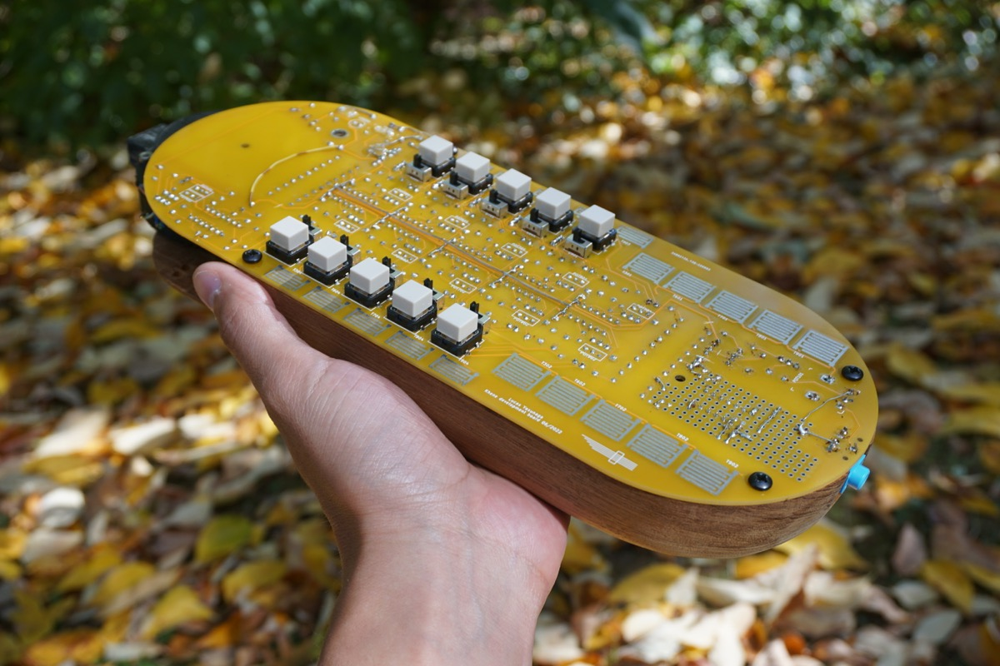
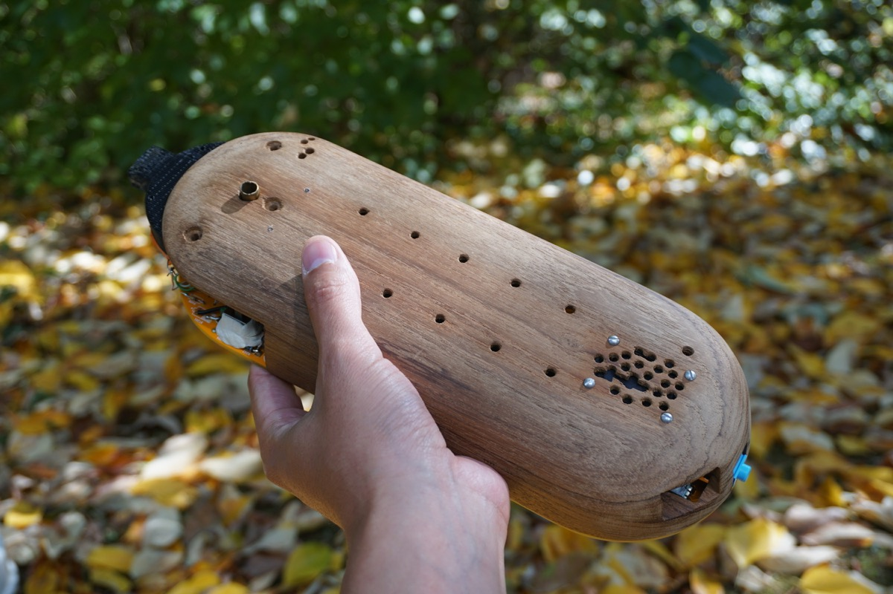

百笙 (hyakushō) - Centikhene is an electronic mouth organ that is modeled after the Laotian traditional mouth organ, Khene, and the Japanese traditional mouth organ, 笙 Shō.
百笙 Centikhene は発振回路を基にした電子管楽器です。この楽器は雅楽などで使われる日本古来の管楽器、笙（しょう）とラオスやタイのラーオ族に伝わる笙の先祖と言われるKhene (ケーン)という管楽器をインスピレーションにデザインしたアナログ電子楽器です。
 {kind=link}
{kind=link}
{kind=link}
{kind=link}

Centikhene’s circuit design is born out of one of the electronic bugs from the project Electronic Entomology. Centikhene is an attempt to create an electronic folk instrument that is a companion for our daily life. The goal is to have a simple enough design in its interface and architecture, the spirit of folk instrument which lends itself to be iterated, modified and be played by many users.
Centikhene の回路のデザインは電子昆虫学というプロジェクトの虫から派生したものです。このプロジェクトは私達の生活の一部になり得るような親しみやすい電子楽器を作ることです。民族楽器特有の簡潔なつくりとインターフェースのデザインをゴールとすれば新しい電子楽器もいつかはたくさんの人から演奏され、そして改造と進化をとげて伝統の楽器となり得るでしょうか。
The main part of this circuit is a pair of tunable oscillators + trigger units that is repeated over and over on the board to create the available notes. This unit can be multiplied like how the unit of a centipede’s leg repeats over and over, which centikhene’s name originates from. In this current iteration there are 5 repeating units and 10 notes that can be played at the same time, which can be expanded in the future versions. Centikhene’s centi (hundred) also refers to the tunable nature of each note that can produce hundreds of different tunings, which are usually predetermined by the size of reeds and pipes in the case of Khene and Shō.
この楽器の回路の主となる作りはチューンすることができる一対の発振回路とトリガーをユニットとしたものでそれを何度も複合することで操ることのできる音数を増やしていきます。このユニットを複合した様が節足動物の百足（ムカデ- Centipede）のように見えることからCentipede の centi（百）をとってCentikhene そして百笙と名づけられました。このバーションでは五つの複合されたユニットがあり十音を同時に奏でることができ、それを二十音、三十音に増やすことが可能です。笙やケーンといった管楽器と違い百笙はそれぞれの音階を自在に変化させることができるため無限に構成音を作ることが出来ます。これもまた百の笙と名付けられた由縁です。
{kind=link}
Centikhene possesses a breath synchronization instrument (breath sensor) that are developed and adopted from Ian Fritz's design of wind sensor to be bidirectional. This triggers notes with the movement of the diaphragm both at inhale and exhale, allowing the player to play rhythmically and continuously. This ongoing project started with the help of Will Schorre and has gone through a few iterations of prototyping. The next generation is currently been designed with a consideration of bringing the full potential of this format. There will be performances in the near future.
百笙には呼吸共鳴器があり、風力センサーとして私達の身体と電子回路を繋げます。この風力センサーはIan Fritzのデザインを基に考案したものです。センサーの中の横隔膜の動きが息を吸った時と吐いた時にトリガーとなり発振回路からの音を鳴らします。笙とケーンと同じく呼吸の吸と吐でどちらでも音を鳴らすことが出来るので息継ぎなしで継続して音が出せ、リズミカルに呼吸を生かした演奏ができます。このプロジェクトは友達のWill Schorreの助けのもとに始まり、数バージョンのプロトタイプを作る中でこのかたちになりました。現在、次のバージョンがデザインされておりこのフォーマットの潜在能力をさらに引きだすことを目指しています。近々パフォーマンスをしようと思っています。
Wind sensor idea by Ian Fritz{kind=link}